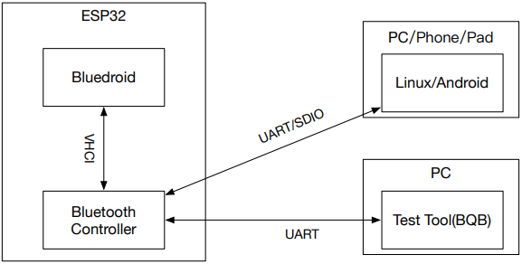
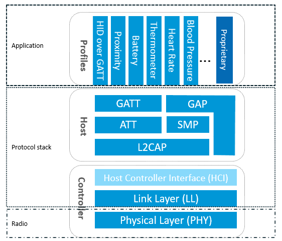

基于GAP的BLE HID人机接口#
实验内容#
本次实验的内容验证基于GAP协议的HID人机接口。实验分为两大部分：
BLE HID Device共有两个内容：
以PC机为HOST，BLE HID Device连接后充当鼠标
连接到下面提到的BLE HID Host，充当无线遥控器。
BLE HID Host
充当BLE HID Host，与BLE HID Device配合使用，接收无线遥控器输入
GAP简介#
蓝牙是⼀种短距通信系统，其关键特性包括鲁棒性、低功耗、低成本等。蓝牙系统分为两种不同的技术：经典蓝牙 (Classic Bluetooth) 和蓝牙低功耗 (Bluetooth Low Energy)。 ESP32 支持双模蓝牙，即同时支持经典蓝牙和蓝牙低功耗。
从整体结构上，蓝牙可分为控制器 (Controller) 和主机 (Host) 两⼤部分：控制器包括了 PHY、Baseband、Link Controller、Link Manager、Device Manager、HCI 等模块，用于硬件接⼝管理、链路管理等等；主机则包括了 L2CAP、SMP、SDP、ATT、GATT、GAP 以及各种规范，构建了向应用层提供接口的基础，方便应用层对蓝牙系统的访问。主机可以与控制器运行在同⼀个宿主上，也可以分布在不同的宿主上。ESP32 可以支持上述两种方式。 
LL(Link Layer) 位于最底层，负责广播通信有关功能的定义和实现，包括物理通道的选择、相关的链路状态的定义、PDU的定义、设备过滤(Device Filtering)机制的实现等。
HCI负责将LL提供的所有功能，以Command/Event的形式抽象出来，供Host使用。
GAP负责从应用程序的角度，抽象并封装LL提供的功能，以便让应用以比较傻瓜的方式进行广播通信。当然，这不是必须的，也就是说，我们也可以在没有GAP参与的情况下，进行广播通信。
广播通信相关的协议层次 GAP>HCI>Link Layer。

BLE HID Device#
该演示使用 esp_hid 组件提供的 API 来创建 BT、BLE 或蓝牙双模隐藏设备。用户可以通过设置来选择模式HID_DEV_MODE。
做为PC的ble鼠标#
将ESP32蓝牙与电脑相连接，蓝牙名为ESP BT HID，此时BT HID设备充当鼠标。连接成功后，用户可以按照下面的方法在监视器中输入字母指令，可一次输入多个，操作“鼠标”。
########################################################################
BT hid mouse demo usage:
You can input these value to simulate mouse: 'q', 'w', 'e', 'a', 's', 'd', 'h'
q -- click the left key
w -- move up
e -- click the right key
a -- move left
s -- move down
d -- move right
h -- show the help
########################################################################
BLE HID设备充当遥控器#
此示例需要与下面的BLE HID HOST示例配合使用
BLE HID设备充当遥控器。让其与另一个烧录了BLE HID host程序的ESP32自动连接，连接成功后，遥控器会定时调高和调低音量，可在监视器中看到输出数据。
构建和烧录#
构建项目并将其烧写到板上，然后运行监控工具查看串行输出：
命令行界面：
idf.py -p PORT flash monitor
（要退出串行监视器，请键入Ctrl-]。）
Clion界面：
选择 flash 并运行
选择 monitor 并运行
示例输出#
I (0) cpu_start: Starting scheduler on APP CPU.
I (607) BTDM_INIT: BT controller compile version [d03a5d3]
I (607) system_api: Base MAC address is not set
I (607) system_api: read default base MAC address from EFUSE
I (617) phy_init: phy_version 4670,719f9f6,Feb 18 2021,17:07:07
W (1337) BT_BTM: BTM_BleWriteAdvData, Partial data write into ADV
I (1357) HID_DEV_DEMO: START
I (25067) HID_DEV_DEMO: CONNECT
I (25357) HID_DEV_DEMO: Send the volume
E (25437) BT_SMP: Value for numeric comparison = 125657
I (25437) ESP_HID_GAP: BLE GAP NC_REQ passkey:125657
W (25517) BT_SMP: FOR LE SC LTK IS USED INSTEAD OF STK
I (25587) ESP_HID_GAP: BLE GAP KEY type = ESP_LE_KEY_LENC
I (25587) ESP_HID_GAP: BLE GAP KEY type = ESP_LE_KEY_PENC
I (25587) ESP_HID_GAP: BLE GAP KEY type = ESP_LE_KEY_LID
I (25647) ESP_HID_GAP: BLE GAP KEY type = ESP_LE_KEY_PID
I (25757) ESP_HID_GAP: BLE GAP AUTH SUCCESS
I (27457) HID_DEV_DEMO: Send the volume
I (29557) HID_DEV_DEMO: Send the volume
I (31657) HID_DEV_DEMO: Send the volume
I (33757) HID_DEV_DEMO: Send the volume
I (35857) HID_DEV_DEMO: Send the volume
I (37957) HID_DEV_DEMO: Send the volume
I (40057) HID_DEV_DEMO: Send the volume
I (42157) HID_DEV_DEMO: Send the volume
I (44257) HID_DEV_DEMO: Send the volume
I (46357) HID_DEV_DEMO: Send the volume
I (48457) HID_DEV_DEMO: Send the volume
I (50557) HID_DEV_DEMO: Send the volume
...
BLE HID Host#
该演示使用 esp_hid 组件提供的 API 创建蓝牙双模隐藏主机。程序启动后，HID 主机会扫描周围的蓝牙 HID 设备，并尝试连接上一个被扫描的设备。当连接建立成功后，HID 主机会转储 HID 设备信息，并可以接收 HID 设备发送的数据。
此示例与 BLE HID Device 示例配合使用，需要两组配合完成。
一组同学烧录主机
一组烧录设备进行验证
构建和烧录#
构建项目并将其烧写到板上，然后运行监控工具查看串行输出：
命令行界面：
idf.py -p PORT flash monitor （要退出串行监视器，请键入Ctrl-]。）
Clion界面：
选择 flash 并运行
选择 monitor 并运行
示例输出#
I (0) cpu_start: Starting scheduler on APP CPU.
I (602) BTDM_INIT: BT controller compile version [d03a5d3]
I (612) system_api: Base MAC address is not set
I (612) system_api: read default base MAC address from EFUSE
I (612) phy_init: phy_version 4670,719f9f6,Feb 18 2021,17:07:07
I (1332) ESP_HIDH_DEMO: SCAN...
I (7212) ESP_HIDH_DEMO: SCAN: 1 results
BLE: fc:f5:c4:3c:62:92, RSSI: -29, USAGE: GENERIC, APPEARANCE: 0x03c0, ADDR_TYPE: 'PUBLIC', NAME: ESP BLE HID2
I (7332) ESP_HID_GAP: BLE GAP SEC_REQ
E (7702) BT_SMP: Value for numeric comparison = 125657
I (7702) ESP_HID_GAP: BLE GAP NC_REQ passkey:125657
W (7742) BT_SMP: FOR LE SC LTK IS USED INSTEAD OF STK
I (7892) ESP_HID_GAP: BLE GAP KEY type = ESP_LE_KEY_PID
I (7892) ESP_HID_GAP: BLE GAP KEY type = ESP_LE_KEY_LENC
I (7892) ESP_HID_GAP: BLE GAP KEY type = ESP_LE_KEY_PENC
I (7892) ESP_HID_GAP: BLE GAP KEY type = ESP_LE_KEY_LID
I (8142) ESP_HID_GAP: BLE GAP AUTH SUCCESS
I (9332) ESP_HIDH_DEMO: fc:f5:c4:3c:62:92 OPEN: ESP BLE HID2
BDA:fc:f5:c4:3c:62:92, Appearance: 0x03c0, Connection ID: 0
Name: ESP BLE HID2, Manufacturer: Espressif, Serial Number: 1234567890
PID: 0x05df, VID: 0x16c0, VERSION: 0x0100
Battery: Handle: 42, CCC Handle: 43
Report Maps: 2
Report Map Length: 38
VENDOR FEATURE REPORT, ID: 1, Length: 8, Permissions: 0x0a, Handle: 71, CCC Handle: 0
VENDOR OUTPUT REPORT, ID: 1, Length: 8, Permissions: 0x0a, Handle: 68, CCC Handle: 0
VENDOR INPUT REPORT, ID: 1, Length: 8, Permissions: 0x12, Handle: 64, CCC Handle: 65
Report Map Length: 111
CCONTROL INPUT REPORT, ID: 3, Length: 2, Permissions: 0x12, Handle: 85, CCC Handle: 86
I (9722) ESP_HIDH_DEMO: fc:f5:c4:3c:62:92 INPUT: CCONTROL, MAP: 1, ID: 3, Len: 2, Data:
I (9722) ESP_HIDH_DEMO: 40 00
I (9812) ESP_HIDH_DEMO: fc:f5:c4:3c:62:92 INPUT: CCONTROL, MAP: 1, ID: 3, Len: 2, Data:
I (9812) ESP_HIDH_DEMO: 00 00
I (11822) ESP_HIDH_DEMO: fc:f5:c4:3c:62:92 INPUT: CCONTROL, MAP: 1, ID: 3, Len: 2, Data:
I (11822) ESP_HIDH_DEMO: 80 00
I (11912) ESP_HIDH_DEMO: fc:f5:c4:3c:62:92 INPUT: CCONTROL, MAP: 1, ID: 3, Len: 2, Data:
I (11912) ESP_HIDH_DEMO: 00 00
I (13922) ESP_HIDH_DEMO: fc:f5:c4:3c:62:92 INPUT: CCONTROL, MAP: 1, ID: 3, Len: 2, Data:
I (13922) ESP_HIDH_DEMO: 40 00
I (14012) ESP_HIDH_DEMO: fc:f5:c4:3c:62:92 INPUT: CCONTROL, MAP: 1, ID: 3, Len: 2, Data:
I (14012) ESP_HIDH_DEMO: 00 00
I (16022) ESP_HIDH_DEMO: fc:f5:c4:3c:62:92 INPUT: CCONTROL, MAP: 1, ID: 3, Len: 2, Data:
I (16022) ESP_HIDH_DEMO: 80 00
I (16112) ESP_HIDH_DEMO: fc:f5:c4:3c:62:92 INPUT: CCONTROL, MAP: 1, ID: 3, Len: 2, Data:
I (16112) ESP_HIDH_DEMO: 00 00
I (18122) ESP_HIDH_DEMO: fc:f5:c4:3c:62:92 INPUT: CCONTROL, MAP: 1, ID: 3, Len: 2, Data:
I (18122) ESP_HIDH_DEMO: 40 00
I (18212) ESP_HIDH_DEMO: fc:f5:c4:3c:62:92 INPUT: CCONTROL, MAP: 1, ID: 3, Len: 2, Data:
I (18212) ESP_HIDH_DEMO: 00 00
...
源代码参考#
参见参考资料与源代码